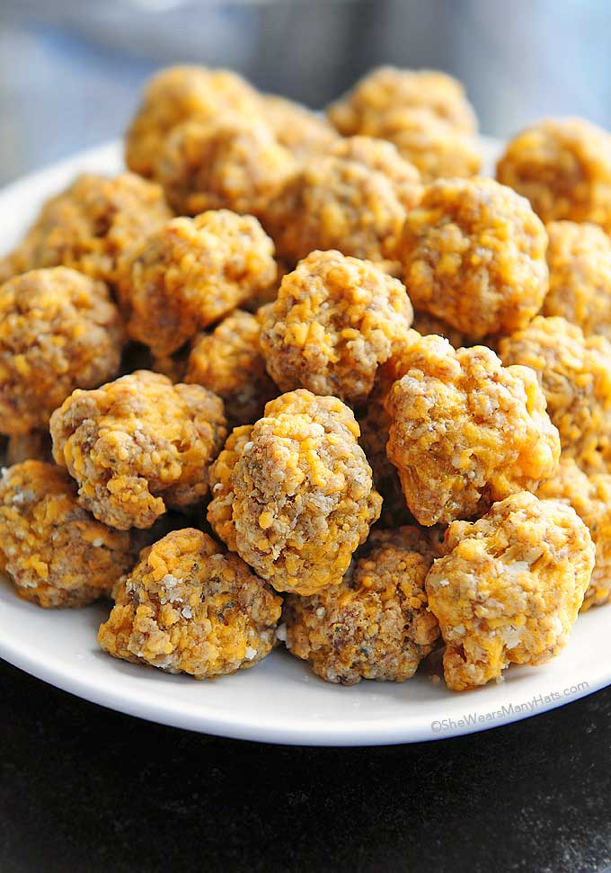

Sausage Balls

This is a recipe I have grown up with all of my life, from my southern grandma, she would always make these during the holidays. These are commonly consumed as an appetizer before thanksgiving or christmas dinner, just be sure not to eat too many! These are a savory snack with salty and optionally spicy sausage paired with cheddar cheese, and a crunch from the baked bisquik in them.
Ingredients
- Ground pork sausage (spicy or not)
- Baking mix, preferably bisquick
- Cheese, cheddar variety
Directions
- Mix the sausage and bisquick (or whatever baking mix you chose) together. This is a step I like to use my hands for and get a little dirty.
- Add the cheddar in!
- Form the mixture into ball shapes, around 1 inch in diameter.g
- Bake the balls in an oven at 350 degrees fahrenheit until golden.